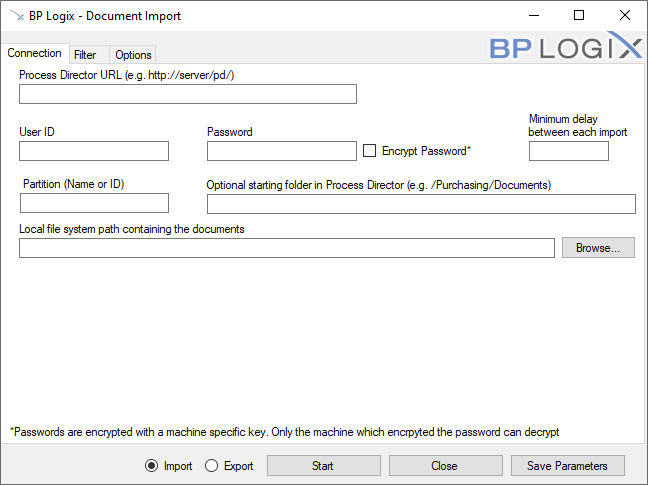
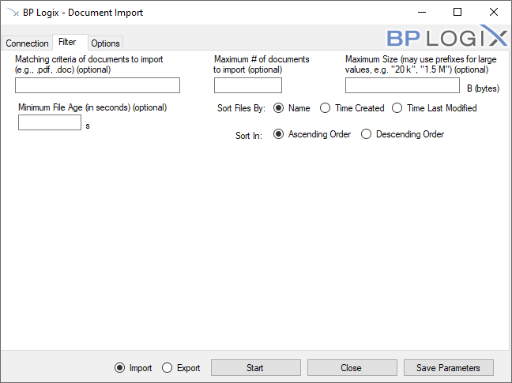
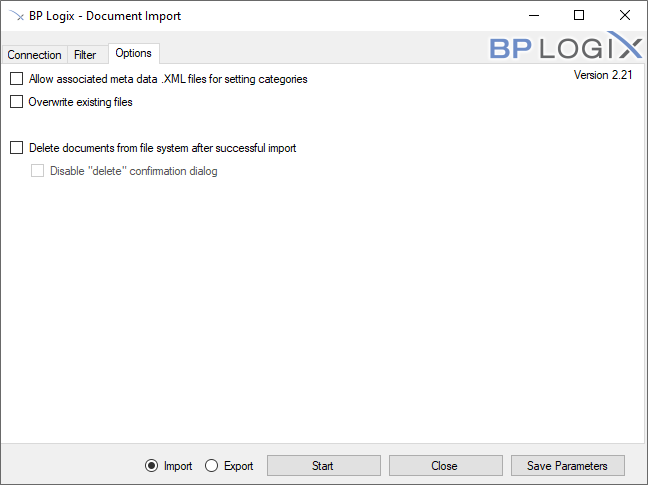
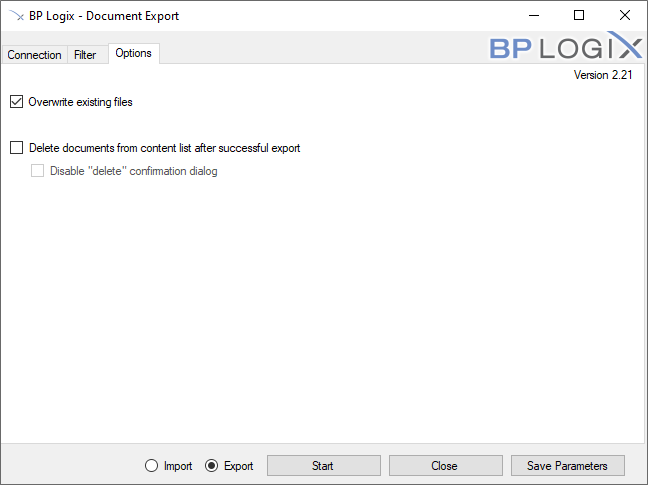

Process Director provides a utility for importing or exporting documents automatically between Process Director and file system folders, named "BPImport". The utility does not import/export any content list items other than documents, so Forms, Knowledge Views, etc., are not affected by the bpImport utility.
BPImport makes it easy to import documents from a file system when moving from a file based system to Process Director as your document management system. This utility can be run interactively with a dialog prompting for input fields, or scheduled to perform an automatic import on a scheduled basis. The import or export can be run from the machine on which Process Director is installed, or from a remote computer. You must enter credentials for a user that has full permissions to the folder in which to import/export.
The executable file, bpImport.exe, is located in the c:\Program Files\BP Logix\Process Director\ directory by default. You can copy this utility to any computer that has Internet Explorer 6 or higher installed. Simply execute bpImport.exe to launch the dialog, and press “Start” to begin the import/export process. The status of the import is displayed on the dialog.
Cloud installation customers can download the utility from the Downloads section of the BP Logix support site.
The bpImport utility has a tabbed interface, and the fields in the interface are generally the same whether you wish to import or export documents.
The connection tab creates the connection between Process Director and your file system.

The complete URL to the server running Process Director.
The User ID to use for the import routine. This user must be a system administrator. This User ID is designated as the document owner for the new documents.
The password to use for the import routine. This user must be a system administrator.
For bpImport v2.21 and higher, this property enables you to encrypt the password in the command line command. The encryption uses a machine-specific key, so the password can only be decrypted on the machine on which the encryption was performed. So, a bpImport command that uses an encrypted password must be run on the machine on which it was created. If the command runs on a different machine, the password cannot be decrypted when passing the command to the Process Director server.
Specifies an optional amount of time in milliseconds to delay between each file imported/exported. The default is no delay. This is only needed if you want to give the server time to respond to other requests when many documents are being imported at once.
Enter the Partition name or ID to use when importing.
Specifies the starting folder in the Process Director database. If this field is not specified, new documents will be stored in the root folder.
Specifies the starting location to the documents to be imported. This can specify a network path, or a file system path. The utility will import all files in the folder, and will traverse through all subdirectories as well. The relative folder structure will be maintained in Process Director.
The file path on the local computer into which all of the exported files will be placed.
Radio buttons to select whether you wish to import documents into Process Director, or export documents from Process Director.
The Filter tab enables you to specify the criteria for the documents you'd like to import/export.

Specifies a filter that is matched against the file name before it is imported/exported. This can be used, for example, to only import documents that have a .pdf extension. If this field is not specified, all documents will be imported.
Specify an optional maximum number of documents to import/export.
Specify an optional maximum number of bytes for a document. Documents larger than this number of bytes on the local file system will be skipped. (Note: a kilobyte is 1,024 bytes, a megabyte is 1,048,576 bytes, and a gigabyte is 1,073,741,924 bytes.)
Enables you to specify the number of seconds since the file was created. Documents newer than the number of seconds specified will be excluded from processing.
This option enables you to determine the order in which files are imported/exported. You can select from one of the following options:
The default order is alphabetical sorting by name.
You can set the import to sort in Ascending or descending order.
When the Import radio button is selected, the Options tab enables you to specify some additional options when importing.

If this is selected it will attempt to find matching file names with “.XML” appended to the name. These files contain XML Meta Data that can be used to set categories and attributes of the document in Process Director. Refer to the section below regarding the format of the XML file.
If selected, this will overwrite existing files on the Process Director server. This option is unchecked by default.
If selected, this option will remove files from your file system after they are imported, or from the Content List after they are exported. Files will be deleted only after they are successfully imported into the Process Director database. This option can be used, for instance, to create a drop folder for documents to automatically be imported based on a schedule. Users and/or applications can drop documents into a file system folder, and the scheduled import utility will import and remove them from the folder.
If selected, there will be no confirmation dialog for every file that is deleted. If this option is not selected, you will be prompted before every file is removed.
When the Export radio button is selected, the Options tab enables you to specify some additional options when exporting.
When exporting items from the Content List, the folder structure of the Content List will be replicated in the local file system during the export.

If selected, this will overwrite existing files on the file system. This option is selected by default.
If selected, this option will remove files from the Content List in Process Director after they are exported. Files will be deleted only after they are successfully exported into the file system.
If selected, there will be no confirmation dialog for every file that is deleted. If this option is not selected, you will be prompted by Process Director before every file is removed.
You may want to automatically schedule the import allowing for Smart Folders. This allows users to drop documents in a folder on a file system and have it automatically imported in to Process Director with the same folder structure used on the file system. This can automatically start a workflow for each new document added. To facilitate this you will schedule the non-interactive import command using the command line options. The import GUI has a button called “Save Parameters” which is used to save all of the current settings in the dialog into popup dialog for copying to the clipboard or save as a batch file. The command line options will specify the fields documented above. Here is the list of command line options available, and the mappings to the dialog fields:
|
Parameter Name |
Description |
Alternate Name |
|---|---|---|
|
directory PATH |
Import files from PATH |
-d |
|
delay NUMBER |
Delay each import by NUMBER milliseconds |
|
|
delete |
Delete files after successful import |
|
|
folder PATH |
Import files into Process Director folder at PATH |
-f |
|
filter FILTER |
Limit import to only files of types in FILTER (comma-separated extensions) |
|
|
partition NAME |
Import into partition NAME |
-i |
|
maxnum NUMBER |
Limit the number of files to import to NUMBER |
-m |
|
metadata |
Include metadata with import files (in corresponding XML files) |
|
|
no-gui |
Run in non-interactive mode (required for scheduling) |
-n |
|
overwrite |
Overwrite files on import with the same name already in Process Director |
|
|
password PASSWORD |
Connect to Process Director as user with password PASSWORD |
-p |
|
user USERNAME |
Connect to Process Director as USER |
-u |
|
webserviceurl URL |
Connect to Process Director at URL |
-w |
| Log PATH | Folder path into which log files will be written | -l |
Running in non-interactive mode requires the following arguments:
-n, --webserviceurl, --partition, --user, --password, --directory
To run the import utility and delete files after a successful import:
To run the import utility with Meta Data and a 50ms delay after every import:
When running the import utility non-interactive from a command line or scheduler, any errors will be written to a file named bpU.log in the Logs directory where the bpImport.exe exists.
The import utility can include meta data with each of the files being uploaded to Process Director. This meta data can set the categories and attributes for the document on the server. This occurs if the option is selected to allow associated meta data files on the import dialog. If this option is selected the import utility will attempt to find matching file names with “.XML” appended to the name. For example, if the import utility finds a file named mydoc.pdf, it will attempt to locate the mydoc.pdf.xml file for the meta data. The meta data XML file must be of a certain format to be recognized as valid meta data. The XML file must contain the following structure and tags.
The <META_NAME> must match an External Name in a category attribute for the document to be assigned to that category. If a matching External Name is not found in the category tree the meta data is discarded after the upload completes.
For example, assume you have a category named Operations that contains a subcategory named Quality with an attribute name of ActionManager. You can assign this entire category tree (i.e. Operations.Quality) to the imported document by using a matching External Name in the ActionManager attribute. If the external name in the ActionManager attribute is set to “manager_name”, the XML for the imported document would look as follows:
To set values for checkboxes, the values YES and NO correspond to a checked state and an unchecked state, respectively.
Date values vary based on locale: if you’re in the USA, use mm/dd/yyyy. If you’re elsewhere, use dd/mm/yyyy.